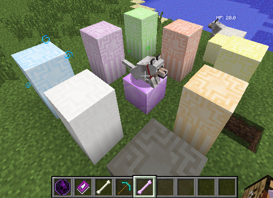

Fixed a ton of bugs brought on by the previous update, as well as some older bugs. Also added an infusion system for making and upgrading Magic Wolves, and re-enabled all previous addons.
AddedTotem and Pillar Blocks- Now have crafting recipes Infused Bones - Now used in an altar setup for creating magic wolves. Order of totems and pillars do not matter.  - By using the same setup and a diamond chestplate, magic wolves can become attuned to your armor. This will allow them to use your armor to defend themselves. NOTE: This will damage the armor as if the player themselves were hit Gem Piles - A decorative block, shift click with a gem on the ground to start or add to a pile. Thermal Expansion Addon - Adds pulverizer recipes to match the macerator ones. |
ChangedBug Fixes:Fixed: Totem and Pillar blocks now drop the right color versions when mined. Fixed: Magic wolves' tails should now move correctly, and other players should be able to see them being pet. Fixed: Magic wolves will no longer crash players if they are damaged while the owner is not around. Fixed: Spellcraft Dust Ore spawns and Spellcraft's Thaumcraft nodes should work again now. Fixed: Recipes links in altars are no longer on top of the craft button. Leppa Berry Juice - Added HUD display Mana Regeneration Rate Changed: Now regenerates 1% of your mana more accurately. Example: If you have 150 maximum mana, you will now have 3 mana regenerated after 20 seconds instead of 2. |
OtherMineFactory Reloaded Addon- Has been re-added. Industrial Craft 2 Addon - Has been re-added. |